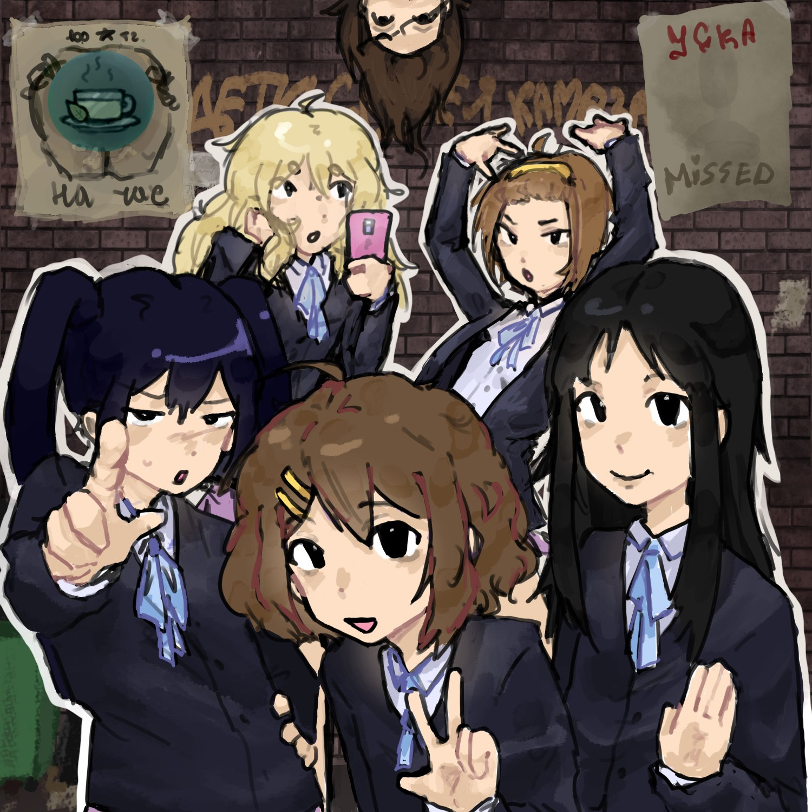
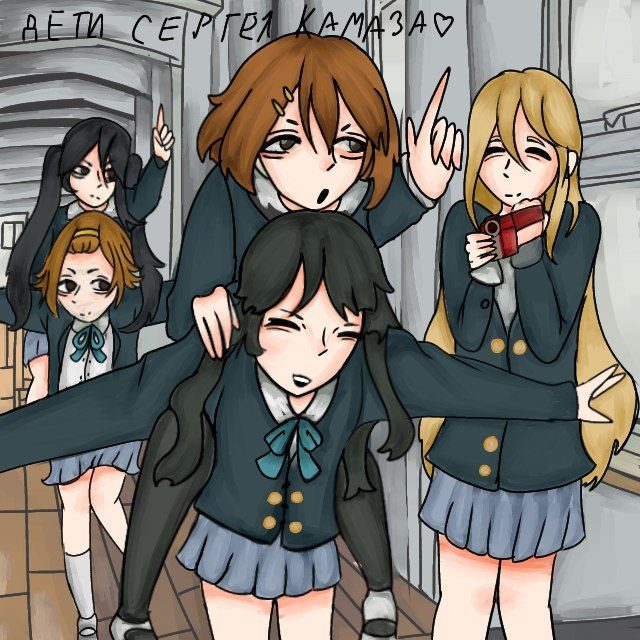
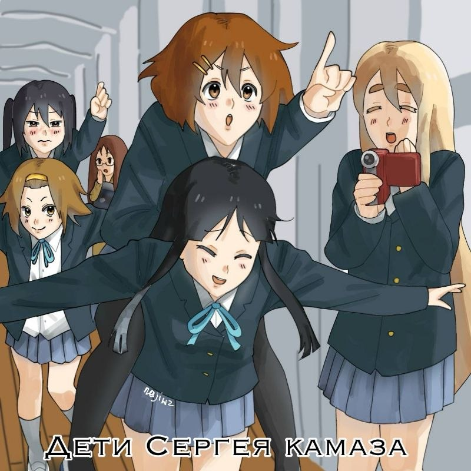
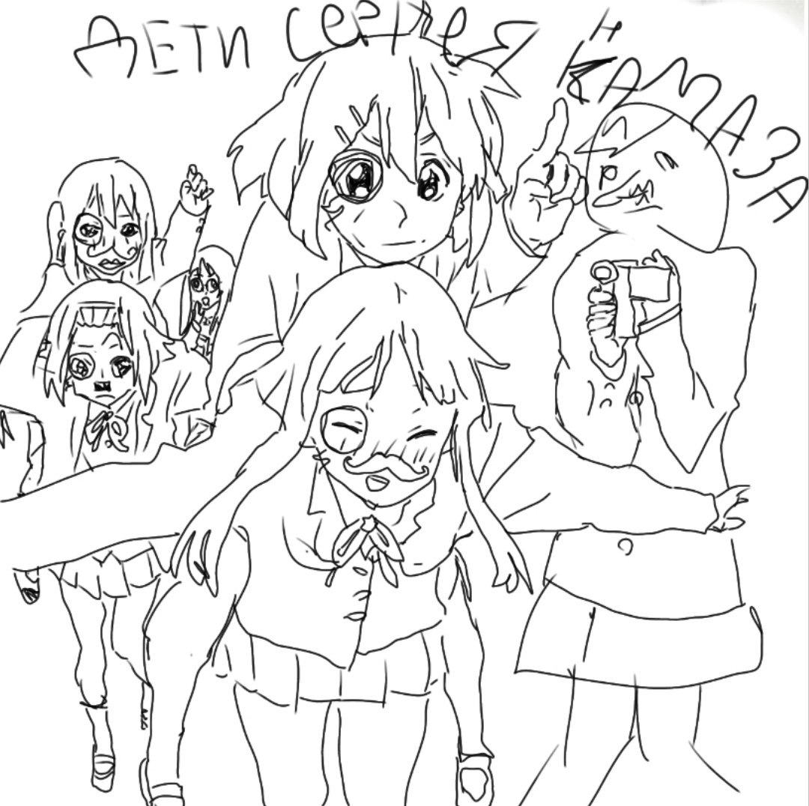
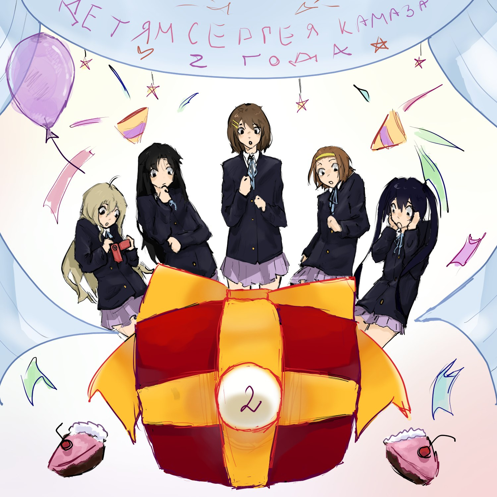
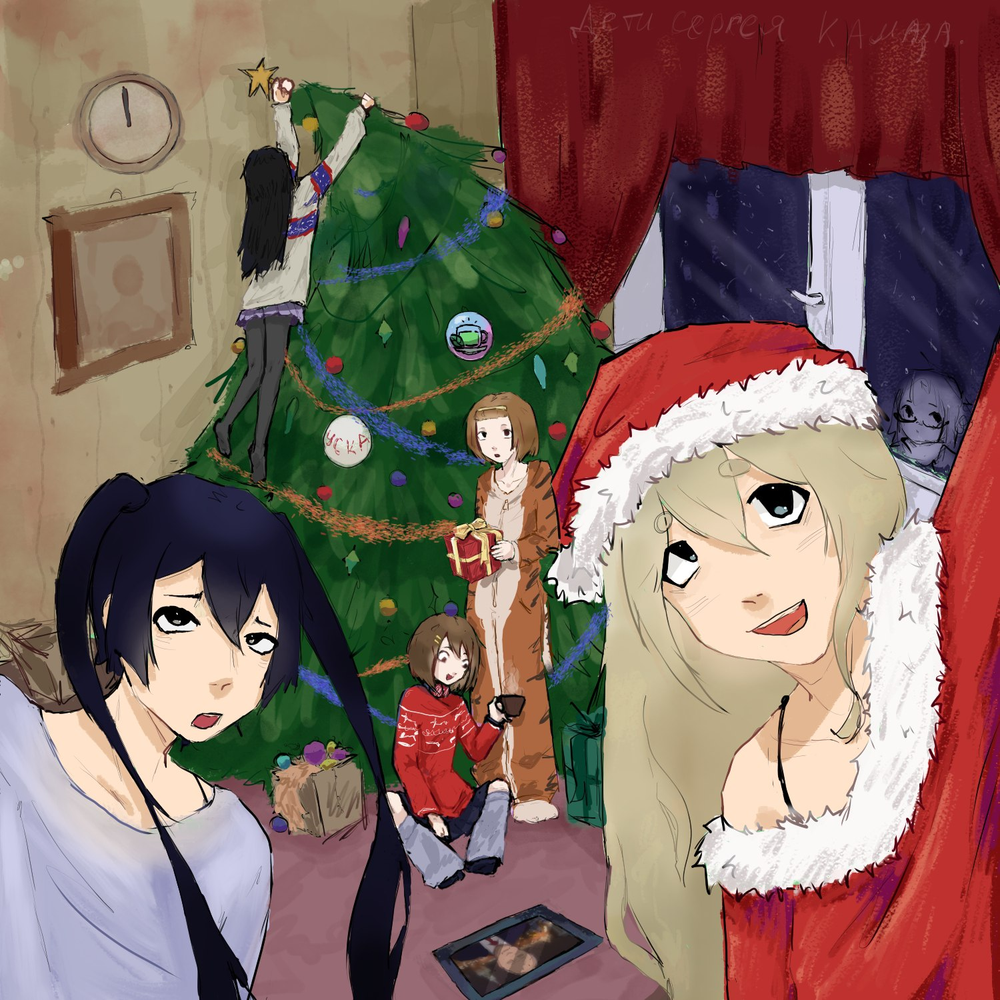

Чат был создан 10 декабря 2023 года. Пройдя путь от небольшой альтернативной группы, в мае 2024 года проект перешел к активному росту. Исторические рекорды пришлись на начало июня 2024 и 2025 годов, когда недельный актив превышал 50 тысяч сообщений.
В начале 2025 года (22 января) нас стало уже 100 человек, а 7 июня того же года мы достигли важной отметки — 1 000 000 сообщений.
История наших лиц





0.1. ПРАВО ВЛАДЕЛЬЦА: Владелец и Администрация имеют полное право отказать в заявке или забанить участника без объяснения причин, если сочтет его нежеланным для чата.
0.2. ЯЗЫКОВАЯ ПОЛИТИКА:
— Основной язык: РУССКИЙ.
— Второстепенный: АНГЛИЙСКИЙ.
— Злоупотребление другими языками (постоянное общение, флуд) карается варном.
В чате действует принцип «Можно всё, но знайте меру». Черный юмор и оскорбления допускаются, но не должны переходить в травлю или реальные угрозы.
РАСИЗМ, СЕКСИЗМ И ДИСКРИМИНАЦИЯ:
1.1. Строго наказуемы: Серьезная пропаганда ненависти или превосходства, а также целенаправленная травля участника по признаку расы, национальности, гендера, религии и т.д.
18+ И НЕПРИЕМЛЕМЫЙ КОНТЕНТ:
2.1. СТРОГО ЗАПРЕЩЕНЫ (БАН): ЦП, расчлененка (гуро), снафф, зоофилия, экстремальное насилие.
2.2. Обязательно под спойлер: Обычные материалы 18+ (порно/эротика) и контент, вызывающий отвращение.
МЕДИА И ФЛУД:
3.1. Раздражающие аудио: Голосовые/видео со стонами, криками, резкими звуками. Допустимо только с текстовым предупреждением.
3.2. Спам/Флуд: Многократное повторение сообщений, бессмысленные символы, использование ботов.
ОСКОРБЛЕНИЯ И АГРЕССИЯ:
4.1. Наказуемы: Жестокие личные оскорбления и реальные угрозы.
4.2. Наказуемо: Провокации, перерастающие в систематическую травлю.
КОНФИДЕНЦИАЛЬНОСТЬ И ДЕАНОН:
5.1. СТРОГО ЗАПРЕЩЕН (БАН): Слив любых личных данных без разрешения.
РЕКЛАМА И КОММЕРЦИЯ:
6.1. Запрещено без согласования.
6.2. Разрешены некоммерческие ссылки.
АДМИНИСТРАЦИЯ:
7.1. Неподчинение.
7.2. Пререкания: Публичные споры в адрес действий Администрации.
ОБХОД ПРАВИЛ:
8.1. Любые действия, которые Администрация сочтет деструктивными.
АПЕЛЛЯЦИЯ И ОБЖАЛОВАНИЕ:
9.1. Право на пересмотр.
9.2. Конструктивный формат жалобы.
КРИТИКА:
10.1. Допускается конструктив.
10.2. Запрещен деструктивный хейт.
КАРЬЕРНЫЙ РОСТ:
11.1. Набор в команду.
11.2. Порядок подачи в статье «Администрация».
(ВАЖНО: Администрация вправе применять санкции и определять срок наказания на свое усмотрение).
Проверить состав администрации можно командой .кто админы
Требования: Активность более 1 месяца, хорошая репутация, доверие Владельца, знание команд бота (Ириса), возраст 13+.
Требования: Наличие релевантного опыта, активность более 6 месяцев, хорошая репутация, серьезное доверие Владельца, знание команд бота (Ириса), возраст 14+.
Отправьте заявку в ЛС Главному Администратору (@Is_Kano)